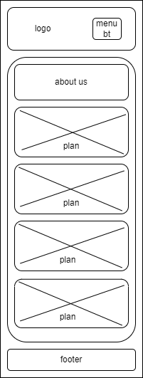
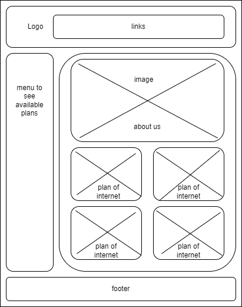

This document describes the plan for the website of the home internet retailer, Gigamax.
Site Name: Gigamax
Description: Este nombre representa una empresa que provee servicios de internet para el hogar con enfoque en máxima velocidad y cobertura en áreas urbanas y rurales.
Suggested domain: gigamax-internet.com
The Gigamax website's main purpose is to offer information about available internet services, display plans and packages, and allow customers to sign up for service online. It will also include support and technical assistance resources for users.
Main color: #079992 (Used in headers and buttons).
Second color: #187878 (Used in body text).
Background color: ##94acb4 (Used as page background).
Main fond: Roboto (Used throughout the body of the text and in the paragraphs).
Secundary fond: Afacad Flux (Used for titles and headers).
Wireframe design for the home page (mobile and desktop view):
Mobile view:
Desktop view:
